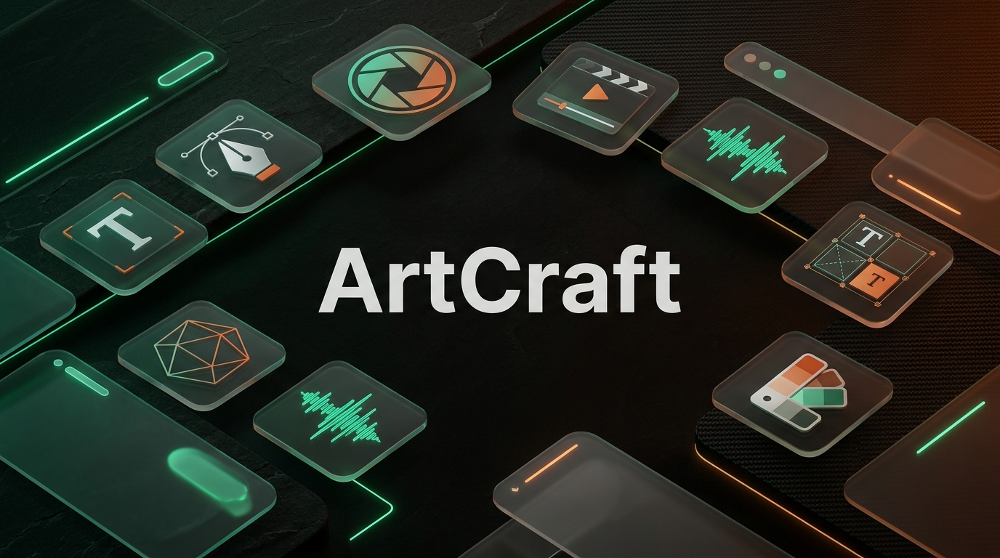
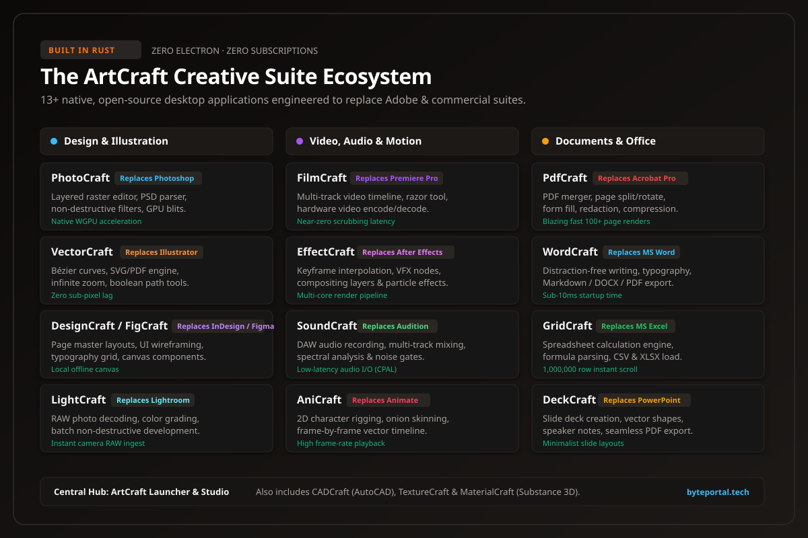

ArtCraft: 13+ Free Open-Source Adobe Alternatives in Pure Rust
· 5 min read
Creative software today is trapped between two bad choices. On one side are commercial giants like Adobe, charging $60 every month for subscriptions on software you never own. On the other side are modern web-wrapped tools that run on Electron, gobbling 4 GB of RAM just to crop a photo or draw a vector curve.
An open-source project called ArtCraft is taking a different path. It is a full suite of 13+ native creative and productivity desktop apps written from scratch in Rust. No Electron. No Chromium web engine. No monthly subscription bills.
Quick Summary (The Short Version)
- • Created by Brandon Thomas: Founded by software engineer Brandon Thomas under the GitHub organization storytold as a clean-room, open-source alternative to commercial creative monopolies.
- • 1-to-1 "Ditto" Replacements: Features 13+ native desktop applications engineered to replicate Adobe Photoshop, Illustrator, Premiere, InDesign, Acrobat, Audition, and Microsoft Office tool-for-tool.
- • Pure Rust & GPU Acceleration: Built natively in Rust using WGPU. Zero Electron bloat, sub-10ms startup times, and minimal memory footprints.
- • AI-Native & MCP Integration: Includes native Model Context Protocol (MCP) servers, allowing AI coding agents to control tools and generate assets programmatically.

The Origin: Who Created ArtCraft and Why?
The ArtCraft ecosystem was created and spearheaded by software engineer and entrepreneur Brandon Thomas (founder of Storyteller.ai and FakeYou), operating under the GitHub handle and organization storytold.
The project was born out of frustration with two deepening industry problems:
- The Subscription Trap: Adobe and commercial software giants have systematically locked creators into perpetually rising monthly subscriptions, proprietary closed formats, and punishing cancellation penalties for software that runs on the user's own hardware.
- Web-Wrapped Bloat: Many modern attempts to build cross-platform desktop alternatives wrap web technologies in Electron (Chromium + Node.js). Opening three Electron apps consumes gigabytes of RAM before you even load a canvas, leaving battery-powered laptops hot and sluggish.
Brandon Thomas set out to prove something radical: by pairing modern high-performance systems programming in Rust with advanced AI coding assistants (such as Anthropic's Claude 3.5 Sonnet and Claude Opus), a lean engineering effort could cleanly reverse-engineer and rebuild the foundational creative tools of the digital era from scratch.
Rather than simple toy prototypes, Thomas built full-fledged desktop engines using native GPU rendering pipelines (WGPU), cross-platform native windows (Tauri and native Rust UI bindings), and integrated Model Context Protocol (MCP) endpoints so that autonomous AI agents can directly automate workflows inside each app.
Why Rust matters for creative tools
Most modern desktop apps are actually hidden Chrome browsers running a JavaScript website. That architecture makes development fast for companies, but punishes your computer. Open three Electron apps, and your fan spins before you draw your first brush stroke.
Rust compiles directly to machine code. It gives developers memory safety without a garbage collector pausing your render loop. In ArtCraft, every app communicates directly with your graphics card via WGPU, the cross-platform WebGPU API for Rust.
The result is immediate: windows open in milliseconds, zoom scales smoothly without pixel stutter, and the apps use a fraction of the RAM demanded by traditional design suites.
1-to-1 "Ditto" Comparison Matrix
Every app in the ArtCraft suite is designed as a direct, functional replacement for a specific commercial software standard. Here is how the lineup maps 1-to-1:
| ArtCraft App | Replaces (Ditto) | Core Workflow | Key Capabilities & Formats |
|---|---|---|---|
| PhotoCraft | Adobe Photoshop | Raster Editing & Retouching | PSD import/export, layer masks, adjustment layers, GPU brushes. |
| VectorCraft | Adobe Illustrator | Vector Illustration | Bézier curves, SVG/PDF engine, boolean path operations, infinite zoom. |
| FilmCraft | Adobe Premiere Pro | Non-Linear Video Editing | Multi-track timeline, razor cuts, hardware video decode/encode. |
| EffectCraft | Adobe After Effects | VFX & Motion Graphics | Keyframe interpolation, node-based compositing, particle simulation. |
| DesignCraft | Adobe InDesign | Desktop Publishing & Layout | Master pages, multi-column spreads, typography grids, print bleeds. |
| LightCraft | Adobe Lightroom | RAW Photo Development | Non-destructive RAW decoding, tone curve grading, batch export. |
| AniCraft | Adobe Animate (Flash) | 2D Animation | Frame-by-frame timeline, onion skinning, vector character bones. |
| SoundCraft | Adobe Audition | Digital Audio Workstation | Multi-track audio mixing, spectral waveform display, low latency (CPAL). |
| PdfCraft | Adobe Acrobat Pro | PDF Tool & Document Assembly | Merge, split, reorder, form-filling, password encryption, compression. |
| FigCraft | Figma / Adobe XD | UI/UX Interface Design | Vector UI canvas, component wireframes, local-first offline prototyping. |
| WordCraft | Microsoft Word / Docs | Word Processing | Distraction-free typing, Markdown & rich text, instant clean PDF/DOCX. |
| GridCraft | Microsoft Excel | Spreadsheets & Data | High-speed formula evaluation, 1M+ row virtualized scroll, CSV/XLSX. |
| DeckCraft | Microsoft PowerPoint | Presentation Decks | Vector slide design, presenter notes, seamless PDF slide exports. |

Detailed Breakdown: 1-to-1 Ditto Explanation
1. PhotoCraft ↔ Adobe Photoshop
Photoshop is the undisputed king of raster photo manipulation, but has accumulated decades of legacy code and telemetry. PhotoCraft replicates the essential raster workflow: non-destructive layer stacks, blending modes (Multiply, Screen, Overlay), clipping masks, and adjustment layers (Curves, Levels, Hue/Saturation). It features a custom PSD file parser so you can open existing Photoshop projects directly, render brushes using hardware compute shaders, and export clean PNG, JPEG, WebP, and PSD assets.
2. VectorCraft ↔ Adobe Illustrator
Illustrator's primary strength is resolution-independent vector precision. VectorCraft duplicates this with an in-house Bézier geometry engine written entirely in Rust. It provides pen and path tools, boolean operations (Union, Intersect, Difference, Exclusion), typography kerning, and infinite canvas zooming with zero sub-pixel latency. Files are saved and exported directly to standard SVG and print-ready PDF formats.
3. FilmCraft ↔ Adobe Premiere Pro
Premiere Pro is famous for crashing and bogging down on timeline playback. FilmCraft offers a streamlined, non-linear video editing (NLE) environment. It provides a multi-track audio and video timeline, clip cutting/splitting with a razor tool, ripple edits, audio waveform synchronization, and hardware-accelerated video decoding using FFmpeg and platform-native video codecs.
4. EffectCraft ↔ Adobe After Effects
For motion graphics, title sequences, and visual effects, EffectCraft provides a keyframe-driven compositor. It includes spatial Bézier easing curves, layer transform hierarchies (parenting and null objects), particle generators, and procedural shader effects that render directly on the GPU without waiting minutes for RAM preview caching.
5. DesignCraft & FigCraft ↔ Adobe InDesign & Figma
While DesignCraft targets multi-page publication layouts, print bleeds, master pages, and column margins (replacing InDesign), FigCraft targets modern screen design, application UI wireframes, and responsive component layouts (replacing Figma). Unlike Figma, FigCraft operates completely offline on your local drive with zero cloud storage dependencies.
6. LightCraft ↔ Adobe Lightroom
Photographers dealing with hundreds of gigabytes of camera files need fast ingest and non-destructive grading. LightCraft decodes raw sensor formats from Sony, Canon, Nikon, and Fujifilm. It gives you exposure, shadows, highlights, and tone curve adjustments that update in real time without creating duplicate files on disk.
7. AniCraft ↔ Adobe Animate
For hand-drawn and digital 2D animation, AniCraft provides traditional onion skinning (viewing previous and next frames at reduced opacity), frame-by-frame vector drawing, and character rigging. It exports to sprite sheets, animated GIFs, and WebM video.
8. SoundCraft ↔ Adobe Audition
Audio recording and mixing requires ultra-low latency to prevent buffer overruns. SoundCraft connects directly to your operating system's audio stack via Rust's CPAL (Cross-Platform Audio Library). It handles multi-track microphone recording, noise gating, EQ filters, audio clip trimming, and mastering for podcasts and video soundtracks.
9. PdfCraft ↔ Adobe Acrobat Pro
Acrobat Pro is notoriously expensive for simple document tasks. PdfCraft handles daily PDF operations with zero fuss: merge several PDF files into one, extract specific pages, rotate orientation, fill interactive PDF forms, apply password protection, and compress file sizes by stripping redundant embedded streams.
10. WordCraft, GridCraft & DeckCraft ↔ Microsoft Office
ArtCraft extends beyond creative arts into office productivity:
- WordCraft (replaces Word): A clean, distraction-free document writer with instant Markdown and DOCX import/export.
- GridCraft (replaces Excel): A blazing-fast spreadsheet engine that virtualizes row rendering, allowing smooth scrolling through 1,000,000+ data rows with standard math and lookup formulas.
- DeckCraft (replaces PowerPoint): A presentation tool for designing vector-crisp slide decks without wrestling with clunky template formatting.
AI-Native Workflow: Model Context Protocol (MCP)
One of the most revolutionary aspects of Brandon Thomas's ArtCraft architecture is its integration with the Model Context Protocol (MCP).
Because the apps are native and open source, each tool exposes an MCP server interface. This means AI coding agents (such as Claude Code, Cursor, or Antigravity) can connect directly to your running ArtCraft instance to inspect layers, generate vector shapes, automate batch photo cropping, or trim video clips using plain natural language commands.
# Example: An AI agent issuing commands to VectorCraft via MCP
vectorcraft --mcp-server --port 9120How to Install and Run ArtCraft
You can get ArtCraft in two ways: via pre-built desktop packages or directly from source code using Rust's Cargo package manager.
Option A: Download Pre-Built Binaries
Visit the official distribution site at getartcraft.com to download the native desktop launcher for Windows, macOS, or Linux.
Option B: Build from Source via Cargo
If you have Rust installed on your machine, you can clone and build the entire workspace locally:
# Clone the ArtCraft repository
git clone https://github.com/storytold/artcraft.git
cd artcraft
# Build the entire workspace in release mode
cargo build --release
# Or run a specific app directly (e.g. PhotoCraft or VectorCraft)
cargo run --release -p photocraftBecause Rust produces self-contained binaries, you can run the compiled executable directly without installing Node, Python, or external runtime frameworks.
What it is not (The Honest Limits)
ArtCraft is an impressive technical achievement, but it is important to understand its current boundaries:
- Not a 1-to-1 feature match today: Adobe has spent thirty years polishing edge cases, color profiles (like CMYK pantone certifications), and legacy print workflows. ArtCraft covers the 80% daily workflow, not every obscure enterprise plugin.
- Ecosystem still growing: You won't find the vast catalog of commercial third-party plugins that exist for After Effects or Photoshop yet.
- No cloud-sync lock-in: There is no proprietary cloud syncing files behind your back. If you want multi-device synchronization, you manage your project folders using Git, Nextcloud, or Dropbox.
Frequently Asked Questions
Who created ArtCraft?
ArtCraft was created by software engineer Brandon Thomas (founder of Storyteller.ai and FakeYou) under the open-source GitHub organization storytold. He spearheaded the project using AI coding agents (Claude Sonnet and Opus) paired with Rust to engineer native, high-performance replacements for Adobe Creative Cloud.
What is the ArtCraft creative suite?
ArtCraft is an open-source suite of 13+ native creative and productivity desktop applications written in Rust. It provides subscription-free alternatives to commercial creative tools like Photoshop, Illustrator, Premiere Pro, InDesign, and Microsoft Office.
Why is ArtCraft built in Rust instead of Electron?
Building natively in Rust eliminates the heavy Chromium web runtime and RAM bloat of Electron. It delivers sub-10ms startup times, native WGPU hardware acceleration, minimal memory consumption, and predictable offline performance.
Is ArtCraft free and open source?
Yes. ArtCraft is 100% free, runs locally on your machine without a cloud account or monthly subscription, and its source code is openly hosted on GitHub under the storytold organization.
Which platforms does ArtCraft support?
ArtCraft provides native desktop releases for Windows, macOS, and Linux, and can also be compiled directly from source via Rust's Cargo package manager.
The takeaway
The biggest shift in creative software is the rejection of bloat and recurring subscriptions. Brandon Thomas and the Storytold team have demonstrated that an engineer leveraging modern AI coding agents can challenge thirty years of proprietary software monopolies with fast, memory-safe Rust code.
Try it on one project this week. Pick one design asset or vector logo, build it in VectorCraft or PhotoCraft, and feel how fast creative software runs when it isn't trapped in a web browser.
Direct Links & Verified Resources
- Official Website & Downloads: getartcraft.com
- GitHub Organization (storytold): github.com/storytold
- Main ArtCraft Repository: github.com/storytold/artcraft
- Founder Brandon Thomas: github.com/storytold (Storyteller.ai / FakeYou creator)
- Rust Language & Toolchain: rustup.rs (for Cargo compilation)